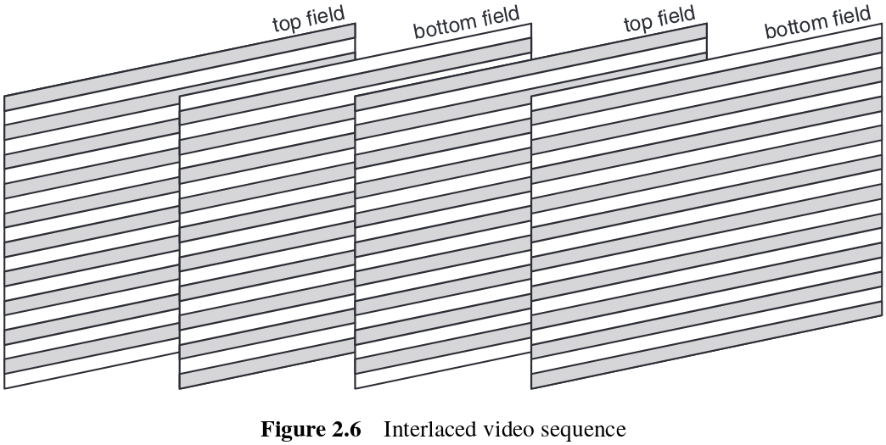

The H.264 Advanced Video Compression Standard, Second Edition¶
2. Video formats and quality¶
2.1 Introduction¶
This chapter introduces concepts such as sampling formats and quality metrics. Digital video is a representation of a natural or real-world visual scene, sampled spatially and temporally. A frame is just a scene sampled at a point in time, and a video sequence is sampling in repeated intervals (usually 1/25 or 1/30 second interval). Popular formats for representing video in digital form include the ITU-R 601 standard, High Definition formats and a set of 'intermediate formats'. Quality metrics are required to measure the performance of a video coder, but subjective measures are not reliable and tend to shift between tests, and qualitative measures can't really capture visual perceived quality.
2.2 Natural video scenes¶
A 'real world' or natural video scene is typically composed of multiple objects, each with their own characteristic shape, depth, texture and illumination. The relevant features of these scenes can be split into spatial and temporal.
Spatial characteristics are texture variation, number and shape of objects, color, etc.
Temporal characteristics are object motion, changes in illumination and movement of the camera or viewpoint.
2.3 Capture¶
A natural visual scene is spatially and temporally continuous. Digital video is the representation of a sampled video scene in digital form. Each spatio-temporal sample is a picture element, or pixel, and is represented as one or more numbers that describe the brightness or luminance and the color of the sample.
To obtain a 2-D sampled image, a camera focuses a 2-D projection of the video scene onto a sensor, such as an array of Charged Coupled Devices (CCDs).
2.3.1 Spatial sampling¶
The output of a CCD array is an analogue video signal, a varying electrical signal that represents a video image. Sampling the signal at a point in time produces a frame with a set of sampling points that represent the electrical signal received and transformed into digital form. The set of sampling points are normally distributed in a form of grid, in which each intersection point of the grid is sampled as a picture element, or pixel. The amount of sample points corresponds to the amount of signals digitalized, and as such is related to image resolution and quality.
2.3.2 Temporal sampling¶
A moving video image is formed by taking a rectangular snapshot of the signal at periodic time intervals. The amount of snapshots taken in the interval of a second is called the frame rate, and is measured by FPS or frames-per-second. 30 frames per second is the standard for digital television, and produces motion with no apparent jitter nor unnatural movements. The higher the frame rate, the higher the amount of samples captured and as such the amount of information needed.
2.3.3 Frames and fields¶
A video signal may be sampled as a series of complete frames, progressive sampling, or as a sequence of interlaced fields, interlaced sampling. In an interlaced sampled video sequence, each frame contains only half of the horizontal sampled points, interchanging between the even and odd lines, in such a way that it can produce the same or even better perceived motion using only half of the information. Interlaced frames can be converted to progressive frames.

2.4 Color space¶
In order to produce color information, there has to be a method to capture and then convert the color signal to digital information. A monochromatic image can represent pixels with only one number to represent the amount of luminance or brightness of that sample point. For colored images, there must be a method to represent brightness, luminance or luma and color, and these methods are described as color spaces.
2.4.1 RGB¶
In the RGB color space, three components are used to represent color. These are Red, Green and Blue, the primary colors of light. With a combination of these three colors, any color can be made. As such, a colored image is represented by a three-dimensioned array, in which each dimension contains the amount of the corresponding color. In order to capture an RGB image, there must be three singular sensors that must filter out all but one of the colors, in a way that it captures only the singled out. Similarly, in order to display colored RGB images, the display must contain cells that light up separately in red, green and blue, stacked together in order to be merged at normal viewing distance and give the appearance of the 'true' color.
2.4.2 YCrCb¶
The human visual system (HVS) is less sensitive to color than to luminance, and as such, it is possible to represent a color image more efficiently by separating the luminance from the color information, and representing luma with higher resolution than color.
The Y:Cr:Cb color space is a popular way of efficiently representing color images. Y is the luminance component and can be calculated as a weighted average of R, G and B:
$Y = k_rR + k_gG + k_bB$
Where $k$ are weighting factors.
The color information can be represented as color difference (chrominance or chroma) components, where each chrominance is the difference between R, G or B and the luminance Y:
$Cr = R - Y$
$Cb = B - Y$
$Cg = G - Y$
The complete description of a color image is given by Y, the luminance component, and three color differences Cr, Cb and Cg that represent the difference between the color intensity and the mean luminance of each image sample.
Because Cr+Cb+Cg is a constant, only two of the three chrominance components need to be stored or transmitted, since the third component can always be calculated from the other two. As such, in the Y:Cr:Cb color space, only the luminance Y, and the red and blue chroma (Cr, Cb) are transmitted. Also, due to how the HSV is less sensitive to color than luminance, this color space represents chroma components with lesser resolution than luminance, reducing the amount of data required to represent color without any perceived drop in quality. Representing color with a lower resolution than luma in this way is a simple but effective form of image compression.
An RGB image may be converted to YCrCb after capturing and prior to transmission, in order to reduce data load. Before displaying it, the image must be converted back to RGB. The equations are given below and can prove how the missing G component can be acquired based on the Cr and Cb components.
$Y = 0.299R + 0.587G + 0.114B$
$Cb = 0.564(B - Y)$
$Cr = 0.713(R - Y)$
$R = Y + 1.402Cr$
$G = Y - 0.344Cb - 0.714Cr$
$B = Y + 1.772Cb$
2.4.3 YCrCb sampling formats¶
There are three sampling patterns for Y, Cr and Cb that are supported by H.264/AVC.
4:4:4 sampling means that the three components (Y:Cr:Cb) have the same resolution, and hence a sample of each component exists at every pixel position. The numbers indicate the relative sampling rate of each component in the horizontal direction, i.e., for every 4 luminance samples there are 4 Cr and 4 Cb samples. This pattern preserves the full fidelity of the chrominance components.
In 4:2:2 sampling, sometimes referred to as YUY2, the chrominance components have the same vertical resolution as the luma but half the horizontal resolution. The numbers 4:2:2 mean that for every 4 luminance samples in the horizontal direction, there are 2 Cr and 2 Cb samples. This pattern is used for high-quality color representation.
In the popular 4:2:0 sampling format ('YV12'), Cr and Cb each have half the horizontal and vertical resolution of Y. This pattern is widely used for consumer applications such as video conferencing, digital television and digital versatile disk (DVD) storage. Because each color difference component contains 1/4 of the number of samples in the Y component, 4:2:0 Y:Cr:Cb video requires exactly 1/2 as many samples as 4:4:4 or R:G:B video.
2.5 Video formats¶
2.5.1 Intermediate formats¶
Video compression algorithms can be applied to a variety of frame formats, and as such, it is common to capture or convert to one of a set of 'intermediate formats' prior to compression and transmission. The Common Intermediate Format (CIF) is the basis for a popular set of formats, comprising a range of resolutions, from 4CIF down to Sub-QCIF. The choice of frame resolution depends on the application and available storage or transmission capacity. For example, 4CIF is appropriate for standard-definition television and DVD-video; CIF and QCIF are popular for videoconferencing applications; QCIF or SQCIF are appropriate for mobile multimedia applications where the display resolution and the bitrate are limited.
| Format | Luminance resolution (horiz. x vert.) | Bits per frame (4:2:0, 8 bits per sample) |
|---|---|---|
| Sub-QCIF | 128 x 96 | 147456 |
| Quarter CIF (QCIF) | 176 x 144 | 304128 |
| CIF | 352 x 288 | 1216512 |
| 4CIF | 704 x 576 | 4866048 |
2.5.2 Standard Definition¶
A widely-used format for digitally coding video signals for television production is ITU-R Recommendation BT.601-5. In the Recommendation, the term 'coding' means conversion to digital format and does not imply compression. The luminance component of the video signal is sampled at 13.5MHz and the chrominance at 6.75MHz to produce a 4:2:2 Y:Cr:Cb component signal. The parameters of the sampled digital signal depend on the video frame rate, 30Hz for an NTSC signal and 25Hz for a PAL/SECAM signal. The higher 30Hz frame rate of NTSC is compensated for by a lower spatial resolution so that the total bit rate is the same in each case, 216Mbps. The actual area shown on the display, the active area, is smaller than the total because it excludes horizontal and vertical blanking intervals that exist 'outside' the edges of the frame. Each sample has a possible range of 0 to 255. Levels of 0 and 255 are reserved for synchronization, and the active luminance signal is restricted to a range of 16 (black) o 235 (white).
2.5.3 High Definition¶
Several High Definition (HD) video formats exist. The most widely used television display formats are listed in Table 2.3 and shown graphically in Figure 2.14. It is clear that HD formats require an even larger uncompressed storage and transmission rate than SD formats, showing how essential it is to compress video for practical applications.
2.6 Quality¶
It is important to have some kind of metric in order to evaluate and compare the quality of digital images. This is a somewhat complex problem, because our perceived visual quality is of a subjective manner, and qualitative measurements have yet to be compatible with our visual notions.
2.6.1 Subjective quality measurement¶
2.6.1.1 Factors influencing subjective quality¶
Our perception of a visual scene is formed by a complex interaction between the components of the Human Visual System (HVS), the eye and the brain. The perception of visual quality is influenced by spatial fidelity, i.e. how clearly parts of the scene can be seen, whether there is any obvious distortion, and temporal fidelity, i.e. whether motion appears natural and 'smooth'.
However, the perceived quality is much more subjective than we can possibly quantify. It depends on the state-of-mind of the person watching it, how comfortable is the environment and what is the task at hand. A focused viewer trying to identify something in the image will require a higher quality than those passively watching a movie, and as such they will have different opinions for the same given example.
2.6.1.2 ITU-R 500¶
Several test procedures for subjective quality evaluation are defined in ITU-R Recommendation BT.500-11. A widely-used procedure from the standard is the Double Stimulus Continuous Quality Scale (DSCQS) method.
In this method, an assessor is presented with a pair of images or short video sequences A and B, one after the other, and is asked to give A and B a 'quality score' by marking one of five intervals ranging from 'Excellent' to 'Bad'. In a typical test session, the assessor is shown a series of pairs of sequences and is asked to grade each pair. Within each pair of sequences, one is the original 'reference' sequence and the other is the modified sequence made by some system or process under test. On each iteration, sequence A and B are randomized between the reference and the modified sequence. Similarly, the order of the two sequences is also randomized during the test session so that the assessor does not know which is the original and which is the impaired sequence. At the end of the session, the scores are converted to a normalized range and the end result is a score, sometimes described as a 'mean opinion score' (MOS) that indicates the relative quality of the impaired and reference sequences.
Tests such as DSCQS are accepted as realistic measures of subjective visual quality. However, this type of test suffers from practical problems that make it expensive and time-consuming to carry out thoroughly. Some of these problems are that the results can vary significantly depending on the assessor and also on the video sequence under test. Even though this can be mitigated by repeating the test with several video sequences and assessors, it must also pay attention to the level of expertise of these personnel. An expert assessor can understand the common distortion or 'artifacts' present in compression and give biased results. Even non-expert assessors can quickly learn these patterns and become an expert, resulting in similar problems.
2.6.2 Objective quality measurement¶
The complexity of subjective quality measurement has led many to easy to use and develop quality measurement algorithms. They proved feasible, yet weakly related to the perceptual visual quality.
2.6.2.1 PSNR¶
Peak Signal to Noise Ratio (PSNR) is the most used quality metric by developers of video compression algorithms. It is measured on a logarithmic scale and depends on the mean squared error (MSE) between an original and an impaired image or video frame.
It can be calculated quickly and easily, proving to be the standard quality measurement in compression algorithms. And yet, it proved to have significant drawbacks that urge the developers to come with better suited metrics. For one, it requires the original image that is not always available, and it also does not provide similarities with the subjective measurements above.
2.6.2.1 Other objective quality metrics¶
Due to the inherent flaws of PSNR, recent years have been a lot of research around the development of better metrics for video quality. Some of those included Just Noticeable Difference (JND), Digital Video Quality (DVQ), Structural SIMilarty index (SSIM), PSNRplus and Predicted Mean Opinion Score (MOSp).
The ITU-T Video Quality Experts Group (VQEG) aims to develop industry standards related to video and multimedia quality assessment. VQEG has developed Recommendation J.247, which covers 'full reference' video quality measurement, i.e. quality metrics that require access to an original, uncompressed version of a video signal. The Recommendation lists four objective quality metrics that 'can be recommended by ITU-T at this time':
- A: NTT Full Reference Method.
- B: OPTICOM Perceptual Video Quality Method.
- C: Psytechnics Full Reference Method.
- D: Yonsei Full Reference Method.
The general approach of these methods involve the alignment of the original and the test video sequences by both spatially and temporally, followed by the calculation of a series of degradation parameters such as blurring, edges introduced by compression, blockiness, etc. Finally, these parameters are combined to produce a single number estimating the subjective quality.
Even more challenging is to measure or estimate quality when a full reference, an unimpaired copy of the original video, is not available. In these situations, No Reference (NR) or Reduced Reference (RR) quality estimation is required.
No Reference metrics attempt to estimate subjective quality based only on characteristics of the decoded video clip. This is a difficult task but some success has been reported using methods such as modelling typical image/video compression artifacts.
Reduced Reference metrics calculate a quality 'signature', typically a low-bitrate side signal, which is passed along to the decoder. The quality estimate is formed by processing the decoded video clip together with the side information.